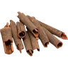
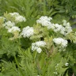

Astrology Grimoire
Moon in Cancer

Cassia
Sweet CicelyA cardinal water transit ruled by the Moon itself, the Moon in Cancer is the most powerful lunar transit for magick of any kind. The Moon rules Cancer, making this placement especially potent for emotional work, psychic development, and deep healing. This transit channels the crab's protective, nurturing energy into the lunar body, heightening feelings, intuition, and the need for emotional security.
Natal Moon in Cancer
The Moon represents your emotional body, how you feel your experiences, where you find comfort, and what you know instinctually. With the Moon in Cancer natally, emotional nature is deeply intuitive, nurturing, and protective.
Emotional Nature: Deeply feeling, psychically attuned, protective, nurturing
Self-Care: Emotions arrive intensely, and moods wax and wane like the Moon itself. You are exquisitely sensitive to the emotional atmosphere around you. Home is your sanctuary, and you form deep bonds with those you love. You nurture others instinctively but must remember to nurture yourself equally. Psychic abilities run strong, you often know what others feel before they speak.
- Create a cozy, safe home environment
- Honor your emotional cycles like lunar phases
- Cook nourishing meals for yourself
- Spend time near water to restore emotional balance
- Set boundaries to protect your sensitive nature
- Work with lunar magick and Moon water
- Allow yourself to retreat when overwhelmed
- Keep a dream journal and honor your intuition
Transiting Moon in Cancer
When the Moon returns to its home sign of Cancer (approximately every 2.5 days), it illuminates emotions, intuition, and the full realm of feeling. Because the Moon rules Cancer, this is the most powerful transit for lunar magick. Both Cancer and the Moon highlight the home environment, making this ideal for creating spaces that feel cozy and secure. Family relationships, love interests, and close bonds all come into sharper focus.
The Moon in Cancer can reveal wounds, insecurities, and unmet emotional needs, but it also provides the space and energy to heal those injuries and reclaim your power. The introspective quality extends beyond emotion into psychic development of all kinds. Check in with your aspirations and ask which goals genuinely feed you rather than drain you.
New Moon in Cancer (Cancer season, roughly June 21 to July 22): Favorable for fresh starts in all Cancer-related areas. Cultivate closeness and support in important relationships, refresh your goals, or begin a new self-care practice.
Full Moon in Cancer (Capricorn season, roughly December 22 to January 19): The tension between determined Capricorn and nurturing Cancer can feel conflicted. Integration comes through seeking wisdom within your emotions, healing old wounds that might block forward momentum, and balancing ambitious goals with genuine self-care.
Cancer Moon Magick
With the Moon in its home sign, virtually any moon spell thrives. Tune into the realm of feeling, whether your emotions or your psychic abilities and intuition. Cast spells to heal old wounds as they surface, and seek the deeper meaning in what you feel. Home protection, home harmony, and hearth magick do exceptionally well now, including kitchen witchery. The Cancer Moon also amplifies magick for nurturing relationships and building support systems.
Do: Lunar magick and Moon water creation, psychic development, family magick and home blessings, ancestral work, emotional healing and release, kitchen witchery, home protection spells, water magick, dream work, nurturing self and others
Don't: Make decisions based purely on emotion without reflection, overextend yourself in caretaking, ignore your need for solitude, push through emotional overwhelm, expect detachment or objectivity, begin projects requiring thick skin
Themes
Emotions, Personal Development, Intuition, the Home
Ingredients
Aloe Vera, Apple, Calendula, Chamomile, Coconut, Cucumber, Dill, Jasmine, Lemon, Lemon Balm, Maple, Oak, Papaya, Poppy, Pumpkin, Rose, Violet, Watermelon, Wormwood
Stones
Amethyst, Chrysocolla, Citrine, Clear Quartz, Jade, Labradorite, Moonstone, Mother-of-Pearl, Opal, Pink Chalcedony, Rose Quartz, Ruby, Selenite, Sodalite